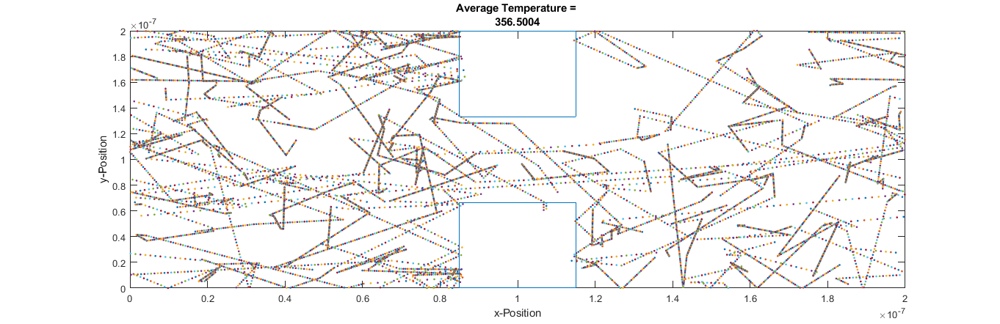
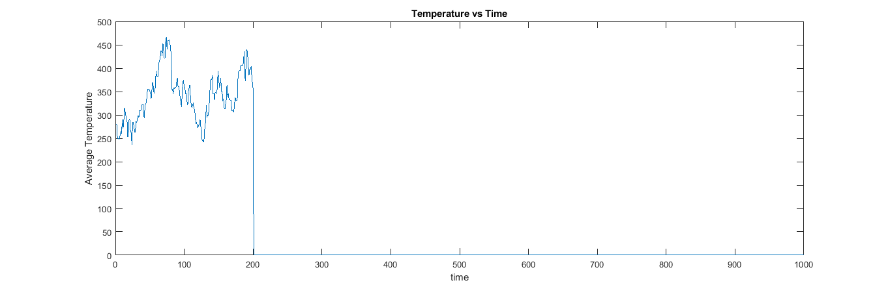
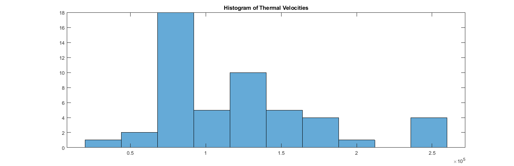
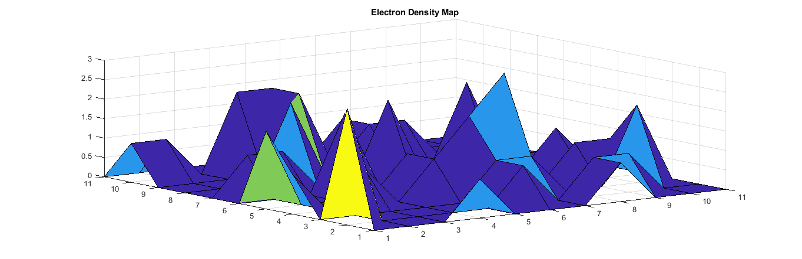
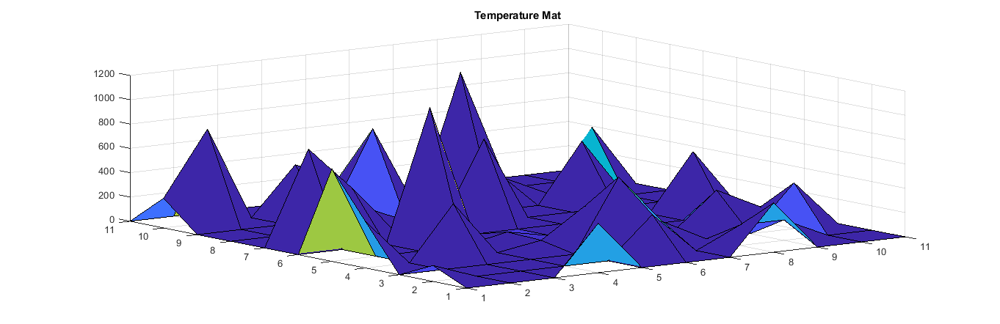

clearvars
clearvars -GLOBAL
close all
format shorte
set(0, 'DefaultFigureWindowStyle', 'docked')
global C
C.q_0 = 1.60217653e-19;
C.hb = 1.054571596e-34;
C.h = C.hb * 2 * pi;
C.m_0 = 9.10938215e-31;
C.kb = 1.3806504e-23;
C.eps_0 = 8.854187817e-12;
C.mu_0 = 1.2566370614e-6;
C.c = 299792458;
C.g = 9.80665;
C.am = 1.66053892e-27;
effMass = 0.26 * C.m_0;
vTherm = sqrt((C.kb * 300) / effMass);
stdv = vTherm/(sqrt(2));
dt = 7.5 * 10 ^ -15;
temparr = zeros(1, 1000);
tmpx = (1:1:1000);
wid = 200 * 10 ^ -9;
len = 200 * 10 ^ -9;
size = 50;
xPos = rand(1, size) .* wid;
yPos = rand(1, size) .* len;
isinbx = true;
while isinbx == true
inbx = ((xPos <= (1.15 * wid/2) & (xPos >= (0.85 * wid/2))) & ((yPos < (len/3)) | yPos >= (2*len/3)));
if (sum(inbx) > 0)
xPos(inbx) = rand(1, sum(inbx)) .* wid;
yPos(inbx) = rand(1, sum(inbx)) .* len;
else
isinbx = false;
end
end
velx = randn(1, size) .* stdv;
vely = randn(1, size) .* stdv;
vrms = sqrt((velx .^ 2) + (vely .^ 2));
vrmsarr = zeros(1, 1000);
pscat = 1 - (exp((-1 * dt) / (0.2 * 10 ^ -12)));
tempr = 300;
is2 = zeros(1, size);
numcol = 0;
tdiff = 0;
sumtdiff = 0;
boundtype = 0;
for i = 1:200
is = pscat > rand(1,size);
velx(is) = randn .* stdv;
vely(is) = randn .* stdv;
if is(1) ~= is2(1)
numcol = numcol + 1;
sumtdfiff = sumtdiff + tdiff;
tdiff = 0;
else
tdiff = tdiff + 1;
end
xPos(xPos >= wid) = xPos(xPos >= wid) - wid;
xPos(xPos <= 0) = xPos(xPos <= 0) + wid;
ylg = (yPos >= len);
ylg1 = (yPos <= 0);
vely(ylg) = -vely(ylg);
vely(ylg1) = -vely(ylg1);
xPosPrev = xPos;
yPosPrev = yPos;
inbx = (((xPos < (1.15 * wid/2)) & (xPos > (0.85 * wid/2))) & ((yPos < (len/3)) | yPos > (2*len/3)));
if ((boundtype == 0) && (sum(inbx) >= 1))
if ((xPosPrev < (1.15 * wid/2)) & (xPosPrev > (0.85 * (wid/2)) & (sum(inbx) >= 1)))
if (yPos(inbx) > (2*len/3))
yPos(inbx) = yPos(inbx) - (2 * (yPos(inbx) - (2*len/3)));
elseif (yPos(inbx) < (len/3))
yPos(inbx) = yPos(inbx) + (2 * ((len/3) - yPos(inbx)));
end
vely(inbx) = -vely(inbx);
yPos(inbx) = yPos(inbx) + (vely(inbx) .* dt);
xPos(inbx) = xPos(inbx) + (velx(inbx) .* dt);
else
velx(inbx) = -velx(inbx);
yPos(inbx) = yPos(inbx) + (vely(inbx) .* dt);
xPos(inbx) = xPos(inbx) + (velx(inbx) .* dt);
end
vrms = sqrt((velx .^ 2) + (vely .^ 2));
elseif ((boundtype == 1) && (sum(inbx) >=1))
if ((xPosPrev < (1.15 * wid/2)) & (xPosPrev > (0.85 * (wid/2)) & (vely(inbx) > 0)))
yPos(inbx) = yPos(inbx) - (2 * (yPos(inbx) - (2*len/3)));
velx(inbx) = randn .* stdv;
vely(inbx) = -1. * (abs(randn .* stdv));
elseif ((xPosPrev < (1.15 * wid/2)) & (xPosPrev > (0.85 * (wid/2)) & (vely(inbx) < 0)))
yPos(inbx) = yPos(inbx) + (2 * ((len/3) - yPos(inbx)));
velx(inbx) = randn .* stdv;
vely(inbx) = (abs(randn .* stdv));
elseif (velx(inbx) > 0)
xPos(inbx) = xPos(inbx) - (2 * (xPos(inbx) - (0.85*wid/2)));
velx(inbx) = -1 .* abs(randn .* stdv);
vely(inbx) = randn .* stdv;
else
xPos(inbx) = xPos(inbx) + ((2 *(1.15*wid/2)) - xPos(inbx));
velx(inbx) = abs(randn .* stdv);
vely(inbx) = abs(randn .* stdv);
end
vrms = sqrt((velx .^ 2) + (vely .^ 2));
end
xPos = xPosPrev + (velx .* dt);
yPos = yPosPrev + (vely .* dt);
vrms = sqrt((velx .^ 2) + (vely .^ 2));
tempr = (sqrt(2)*(mean(vrms) ^ 2) * effMass) / C.kb;
temparr(1, i) = tempr;
is2 = is;
figure (1);
plot(xPos, yPos, '.');
xlabel("x-Position");
ylabel("y-Position");
title(["Average Temperature = " num2str(tempr)]);
xlim([0 wid]);
ylim([0 len]);
hold on
line([0.85*wid/2 0.85*wid/2], [len 2*len/3]);
line([1.15*wid/2 1.15*wid/2], [len 2*len/3]);
line([0.85*wid/2 1.15*wid/2], [len len]);
line([0.85*wid/2 1.15*wid/2], [2*len/3 2*len/3]);
line([0.85*wid/2 0.85*wid/2], [0 len/3]);
line([1.15*wid/2 1.15*wid/2], [0 len/3]);
line([0.85*wid/2 1.15*wid/2], [0 0]);
line([0.85*wid/2 1.15*wid/2], [len/3 len/3]);
end
figure (2)
plot(tmpx, temparr);
xlabel('time');
ylabel('Average Temperature');
title('Temperature vs Time');
hold on
mft = (sumtdiff * dt)/numcol;
mfp = mean(vrms) * mft;
fprintf("The Mean Free Time is = %12.15f", mft);
fprintf("The Mean Free Path is = %12.15f", mfp);
[xgr, ygr] = meshgrid(0:(wid/10):wid, 0:(len/10):len);
elecmat = zeros(11, 11);
tempmat = zeros(11, 11);
numelec = 0;
totvel = 0;
for ii = 1:10
xmin = xgr(1, ii);
xmax = xgr(1, ii+1);
for jj = 1:10
ymin = ygr(jj, 1);
ymax = ygr(jj+1, 1);
for kk = 1:size
if((xPos(kk) > xmin) && (xPos(kk) < xmax) && ((yPos(kk) > ymin) && yPos(kk) < ymax))
numelec = numelec + 1;
elecmat(ii, jj) = elecmat(ii, jj) + 1;
totvel = totvel + sqrt((velx(kk) .^ 2) + (vely(kk) .^ 2));
tempmat(ii, jj) = ((sqrt(2)*(totvel/numelec) ^ 2) * effMass) / C.kb;
end
end
totvel = 0;
numelec = 0;
end
end
figure(3); histogram(vrms, 10); title('Histogram of Thermal Velocities');
figure(4); surf(elecmat); title('Electron Density Map');
figure(5); surf(tempmat); title('Temperature Mat');
The Mean Free Time is = 0.000000000000000The Mean Free Path is = 0.000000000000000
    